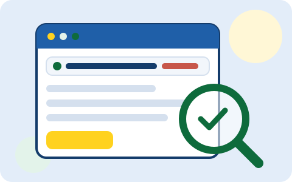

Подделка выглядит почти как настоящий сайт банка. Разница прячется в адресе сайта — и её можно заметить.

Главное правило
Не нажимайте ссылки из сообщений. Заходите на сайт сами — через закладку или набрав адрес.
Суть консультации
Мошенники рассылают письма и SMS: «ваша карта заблокирована», «посылка ждёт оплаты», «вам назначена выплата». Внутри — ссылка на поддельный сайт. Он выглядит как настоящий, но всё, что вы введёте (пароль, данные карты), уйдёт мошенникам. Эта консультация учит замечать подделку.
Дальше — по коду доступа
Полная консультация включает: как выглядит подделка, как проверить адрес сайта, примеры опасных сообщений и порядок действий, если вы уже ввели данные на поддельном сайте.
Как выглядит подделка
Поддельный сайт копируют с настоящего: тот же логотип, те же цвета. Выдаёт его адрес сайта — строка вверху экрана.
sberbank.vozvrat-sredstv.ru
Приманка — знакомое словоНастоящее имя сайта
Читайте адрес с конца: настоящее имя сайта — то, что стоит перед последней частью «.ru». Всё, что перед ним, — приманка.
Поддельный сайт
Адрес с лишними словами: sberbank.vozvrat-sredstv.ru, gosuslugi-plateg.ru.
Сразу просит ввести данные карты или пароль.
Пугает: «счёт заблокирован», «действие срочно».
Открылся по ссылке из SMS или письма.
Настоящий сайт
Адрес короткий и точный: sberbank.ru, gosuslugi.ru.
Не требует сразу вводить данные карты.
Не пугает и не торопит.
Вы открыли его сами — через закладку или набрав адрес.
Как проверить адрес сайта
Адрес сайта — это строка вверху экрана, в браузере (так называется программа, через которую вы открываете сайты). Читайте её с конца: настоящий адрес банка заканчивается на sberbank.ru, а всё, что перед этим через точку — лишние слова, которых у настоящего сайта не бывает.
Проверьте адрес через увеличительное стекло: лишние слова перед названием банка — признак подделки.
Совет: сохраните сайт банка в закладки один раз — и заходите только через закладку. Так вы никогда не попадёте на подделку по ссылке.
Опасные сообщения
Вот типичные сообщения со ссылками. Все они — подделки:
«Ваша посылка ждёт оплаты доставки» — настоящие магазины не берут оплату по ссылке из SMS.
«Вашу карту заблокировали, перейдите по ссылке» — банк блокирует карту только после вашего звонка, а не по ссылке.
«Вам назначена выплата, получите по ссылке» — выплаты оформляются только в личном кабинете (ваша страница с данными) на официальном сайте.
«Ваш сын попал в ДТП, срочно переведите» — перезвоните родственнику по обычному номеру.
Важно: даже если сообщение пришло от знакомого — его телефон могли взломать. Лучше позвонить и спросить, отправлял ли он это сообщение.
Что делать, если вы уже ввели данные на поддельном сайте
Сразу позвоните в банк по номеру с обратной стороны карты и заблокируйте карту.
Смените пароли от банка и Госуслуг.
Проверьте операции по карте. Незнакомые списания — повод для заявления в банк.
Частые вопросы
Сайт открылся и выглядит как настоящий банк. Значит, он настоящий?
Нет. Внешний вид копируют легко. Проверяйте только адрес сайта — и лучше заходить через закладку.
В адресе написано «sberbank», но сайт поддельный. Как так?
Слово «sberbank» может быть в любом месте адреса. Настоящий адрес — только тот, что заканчивается на sberbank.ru без лишних слов.
Я нажал на ссылку, но ничего не вводил. Это опасно?
Само нажатие не опасно. Опасно вводить данные. Просто закройте страницу и удалите сообщение.
Проверьте себя
Какой из этих адресов — настоящий сайт банка?
Пришло SMS: «Ваша посылка ждёт оплаты доставки 299 ₽, перейдите по ссылке». Что делать?
Вы нажали на ссылку из SMS, но ничего не вводили. Опасно ли это?